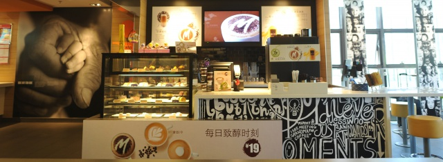

咖啡的起源与培植
在地理概念上，全球性的咖啡种植区有三个——东非和阿拉伯半岛，东南亚和环太平洋地区，拉丁美洲。
不同地区种植出来的咖啡具有不同的风味——一个国家特别的土壤、气候条件和种植方式使得该国出产的咖啡具有特别的风味。法国的酿酒大师把这种现象叫做“地域风格”。
“某些种类的咖啡树能长到30至40英尺高。”
然而，为方便采摘咖啡豆，人们经常通过一些方法来使咖啡树不长那么高。平均而言，一株咖啡树每年所产的咖啡果只够烘焙出0.5公斤的咖啡粉。而对于大多数喜好咖啡的人来说，喝完这些咖啡只需要一个星期的时间！
有两种具有重要经济价值的咖啡：阿拉伯种咖啡豆和东非洲种咖啡豆。在高海拔地区，阿拉伯种咖啡生长得较好，这种咖啡的风味比其它咖啡要精致得多，而且，这种咖啡中咖啡因的含量只占咖啡全部重量的1%。正如其名称所表明的那样，东非洲种咖啡滋味醇厚，抵抗病虫害的能力强，单株产量也很高。该种咖啡生长在低海拔地区，味道苦涩。星巴克公司只采购高品质的阿拉伯种咖啡。
收获季节，咖啡树上长满了鲜红的咖啡果。未经烘焙的咖啡豆只是咖啡果的果核。